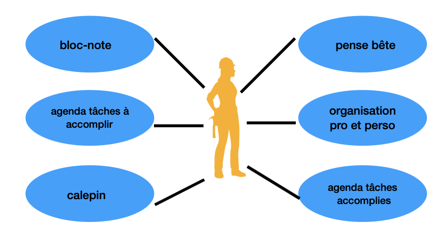
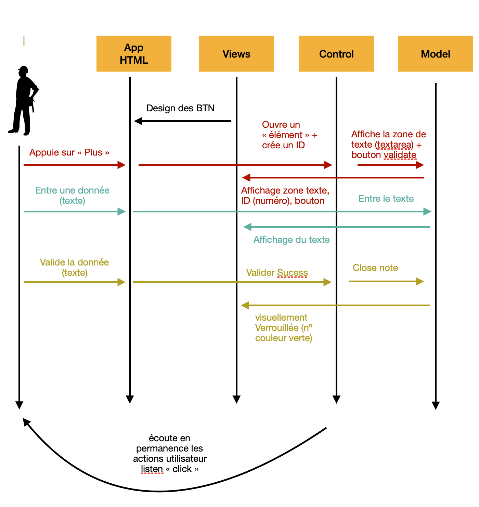
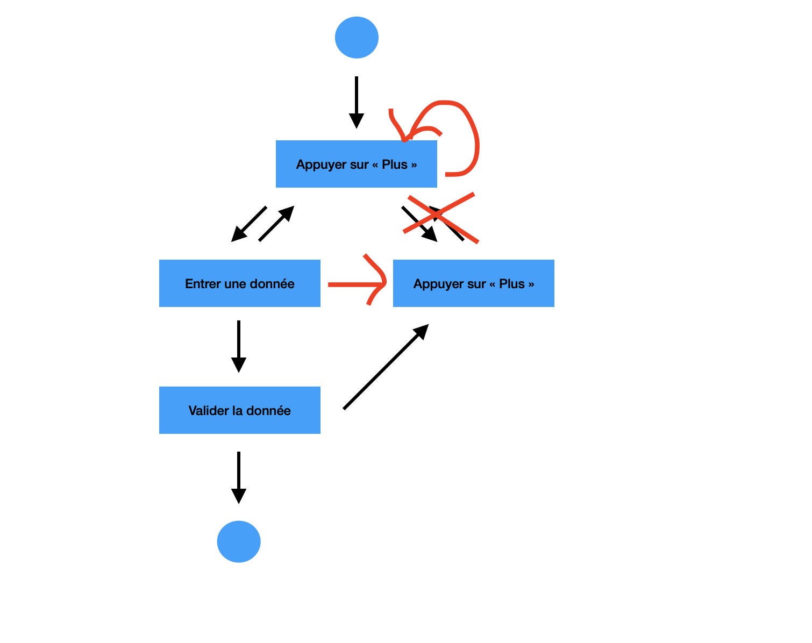
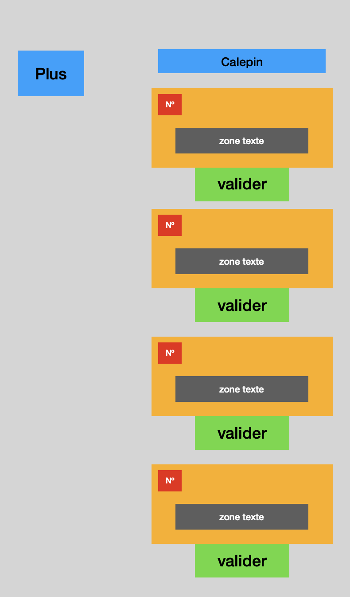
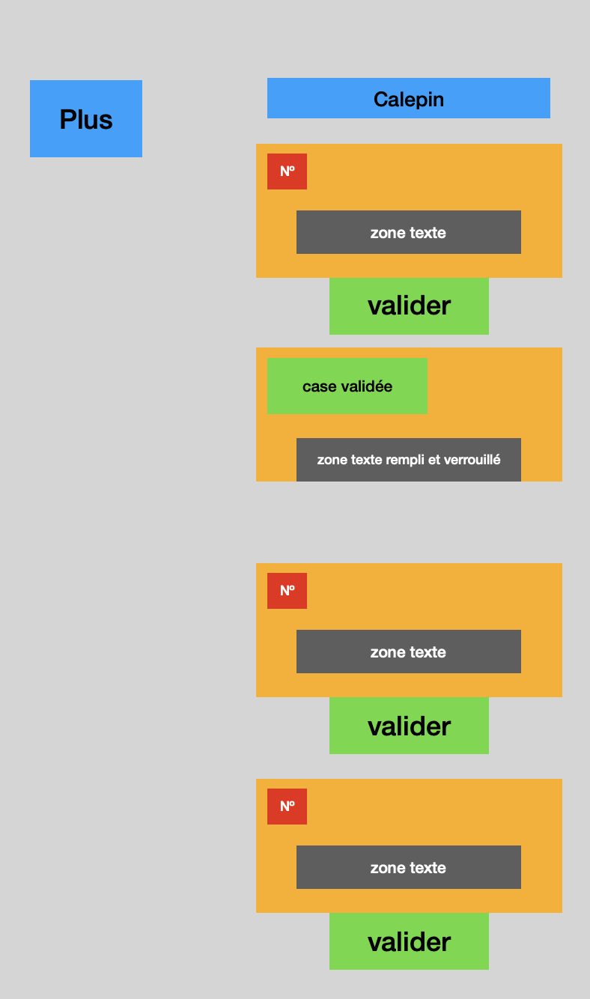
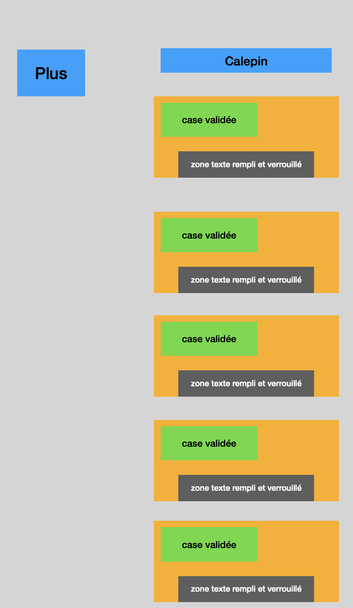

Exercice analyse et production
Objectif : Analyser et produire une application
Analyse
Les cas d’utilisations
- L’utilisateur peut s’en servir de bloc de notes
- Peut servir comme agenda de tâches accomplies ou à accomplir
- C’est clairement un calepin
- Pense bête
- Organisation personnel/professionnel
Diagramme use case


Les scénarios nominaux
- L’utilisateur clique sur « Plus »
- Un premier volet à compléter s’ouvre
- L’utilisateur écrit une première tâche
- L’utilisateur clique sur le bouton « Validate »
- Le volet se valide en vert, pas de possibilité de modification
- L’utilisateur peut cliquer sur « Plus » autant de fois qu’il en a besoin mais impossible de revenir en arrière
- Même processus ainsi de suite
Diagramme d’activité

Wireframe
- Cas 1

- Cas 2

- Cas 3

Liste des interventions à moderniser
- Le raccourcir
- Trouver un design plus moderne
- Developper les liste à l’horizontal plutôt qu’à la vertical
- Faire des cases plus moderne
- Mettre plus de 3D
- Mettre des noms plus compréhensible
- Regrouper certaines lignes de code
- Mettre différentes typographies
- Optimiser l’espace (bloc vide à gauche qui prend trop de place)
- Le bouton valider est en anglais donc l’afficher en français
- Ne pas mettre #1 mais nº1
- Développer le bouton « Plus », afficher exemple : « Ajouter une tâche »
- Dans la case vide ou on peut mettre du texte afficher un message grisé « Saisir texte »
- Donner la possibilité de revenir en arrière pour modifier une note
Par rapport au code :
-
Renommer les variables, fonctions et objets avec des noms plus explicites.
-
Regrouper certaines portions de code afin d’éviter les répétitions.
-
Structurer davantage le code pour améliorer sa compréhension.